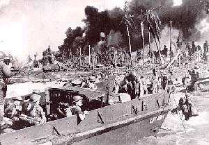
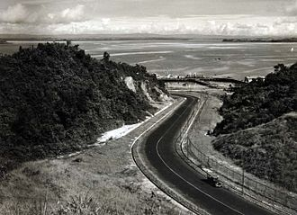
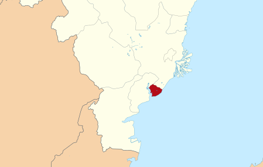

Balikpapan adalah sebuah kota di Provinsi Kalimantan Timur, Indonesia. Sebagai pusat bisnis dan industri, kota ini memiliki perekonomian terbesar di seluruh Kalimantan, dengan total PDRB mencapai Rp79,65 triliun pada tahun 2016. Dari sisi kependudukan,
Balikpapan adalah kota terbesar kedua di Kalimantan Timur (setelah Kota Samarinda) dengan total penduduk sebanyak 645.727 pada tahun 2018 dan pada tahun 2019 berjumlah 655.178 jiwa. Balikpapan merupakan salah satu dari 3 gerbang menuju
ibu kota Indonesia yang baru, dengan keberadaan Pelabuhan Semayang (tersibuk kedua setelah Pelabuhan Samarinda) dan Bandar Udara Internasional Sultan Aji Muhammad Sulaiman yang merupakan yang tersibuk ketiga di Kalimantan, setelah
Banjarmasin dan Pontianak.
SEJARAH
Balikpapan berawal dari sebuah perkampungan nelayan di tepi Selat Makassar pada abad ke-19. Pengeboran pertama sumur minyak di kota ini dimulai pada 10 Februari 1897, yang kemudian ditetapkan sebagai hari jadi Kota Balikpapan. Pada tahun 1907, Bataafsche
Petroleum Maatschappij (BPM) mendirikan kantor di kota ini, yang kemudian diikuti oleh masuknya investasi dari berbagai perusahaan multinasional. Berdasarkan survey persepsi masyarakat dengan 1000 responden, kota Balikpapan dinobatkan
IAP sebagai salah satu kota paling layak huni di Indonesia tahun 2014 dan 2017.
Asal-Usul Nama
Ada beberapa hikayat populer yang menceritakan asal usul kota yang berada di pesisir timur Kalimantan ini, yaitu:
Adanya 10 keping papan yang kembali ke Jenebora dari 1.000 keping yang diminta oleh Sultan Kutai sebagai sumbangan bahan bangunan untuk pembangunan Istana Baru Kutai Lama. Kesepuluh papan yang balik tersebut disebut oleh orang
Kutai Balikpapan Tu. Sehingga wilayah sepanjang Teluk Balikpapan, tepatnya di Jenebora disebut Balikpapan. Nama asli Balikpapan adalah Billipapan atau Balikkappan (logat Banjar).
Suku Pasir Balik (suku asli Balikpapan) adalah keturunan kakek dan nenek bernama Kayun Kuleng dan Papan Ayun. Sehingga daerah sepanjang Teluk Balikpapan oleh keturunannya disebut Kuleng-Papan atau artinya Balikpapan (dalam bahasa Paser, Kuleng artinya
Balik).
Dalam legenda lain juga disebutkan asal usul Balikpapan, yaitu dari seorang putri yang dilepas oleh ayahnya seorang raja yang tidak ingin putrinya tersebut jatuh ke tangan musuh. Sang putri yang masih balita diikat di atas beberapa keping papan dalam
keadaan terbaring. Karena terbawa arus dan diterpa gelombang, papan tersebut terbalik. Ketika papan tersebut terdampar di tepi pantai ditemukan oleh seorang nelayan dan begitu dibalik ternyata terdapat seorang putri yang masih
dalam keadaan terikat. Konon putri tersebut bernama Putri Petung yang berasal dari Kerajaan Pasir. Sehingga daerah tempat ditemukannya dinamakan Balikpapan.
Hari jadi kota Balikpapan adalah tanggal 10 Februari 1897. Penetapan tanggal ini merupakan hasil Seminar Sejarah Balikpapan pada tanggal 1 Desember 1984. Tanggal 10 Februari 1897 ini adalah tanggal pengeboran minyak pertama di Balikpapan yang dilakukan
oleh perusahaan Mathilda sebagai realisasi dari pasal-pasal kerja sama antara J.H. Menten dengan Mr. Adams dari Firma Samuel dan Co.
Masa Kesultanan Kerajaan Kutai - Hindia Belanda
Daerah Balikpapan dan Balikpapan Seberang (Penajam) merupakan bagian dari wilayah negara dependen Kesultanan Kutai. Tahun 1942 Penajam termasuk dalam wilayah Balikpapan. Sejak sekitar tahun 1636, Kalimantan pada umumnya termasuk negara bagian Kutai, negara
bagian Paser dan negara bagian Berau diklaim sebagai wilayah mandala negara Kesultanan Banjarmasin. Pada 1 Januari 1817, Sulaiman dari Banjar telah menyerahkan kedaulatannya atas sebagian besar Kalimantan kepada perusahaan VOC,
yang kemudian diperbarui lagi pada tanggal 4 Mei 1826 pada masa Sultan Adam. Setelah itu Kalimantan pada umumnya menjadi wilayah negara Hindia Belanda. Tahun 1844, bekas negara bagian Kutai secara resmi mendapat pengakuan sebagai
negara dependensi di dalam negara Hindia Belanda. Menurut Staatsblad van Nederlandisch Indië tahun 1849, Kutai termasuk dalam zuid-ooster-afdeeling berdasarkan Bêsluit van den Minister van Staat, Gouverneur-Generaal
van Nederlandsch-Indie, pada 27 Agustus 1849, No. 8 Tahun 1855, Kutai merupakan sebagian dari de zuid- en oosterafdeeling van Borneo yang beribu kota di Banjarmasin.
Pada saat masa Hindia Belanda, dengan ditemukannya sumber-sumber minyak di daerah Balikpapan dan daerah sekitarnya (Samboja, Sanga-Sanga dan Muara Badak), pemerintah Hindia Belanda akhirnya membeli wilayah ini dari Sultan Kutai Kertanegara serta dibangun
untuk mendukung usaha-usaha pertambangan khususnya perminyakan dengan mendirikan kilang minyak, kantor operasi serta perumahan pegawai (sisa-sisa usaha pembangunan Hindia Belanda dapat dilihat dari permukiman para staf Pertamina).
Aktivitas perminyakan ini juga membantu perpindahan penduduk terutama para pekerja dari Jawa, serta dari berbagai daerah. Saat itu perusahaan minyak yang dikenal adalah BPM, Shell dan KPM. Wilayah Balikpapan pada tahun 1930 itu
meliputi Balikpapan Seberang (Penajam).
Masa Pendudukan Jepang
Pada masa Perang Dunia II, Jepang mengincar wilayah ini sebagai batu loncatan mengadakan serangan ke Jawa. Pada tanggal 23 Januari 1942, armada Jepang di bawah pimpinan Shizuo Sakaguchi merebut Balikpapan dari tangan pasukan Sekutu dan Hindia Belanda.
Wilayah Balikpapan saat itu meliputi Balikpapan Seberang (Penajam). Nilai strategis kota Balikpapan juga diperhitungkan tentara sekutu, pada tahun 1945 tentara sekutu di bawah komando Australia merebut kota ini dari tangan Jepang
pada pertempuran 26 Juni-15 Juli 1945 dalam usaha merebut kembali wilayah yang jatuh ke tangan Jepang.

Tentara Sekutu mendarat di Balikpapan, 1 Juli 1945
Masa Republik Indonesia
Berita tentang Proklamasi Kemerdekaan Republik Indonesia agak terlambat sampai di kota ini, sekitar tahun 1945-1946 melalui pekerja BPM yang datang dari Jawa dalam rangka rehabilitasi kilang minyak yang hancur akibat perang yang dilanjutkan
dengan pernyataan rakyat di Lapangan FONI. Namun karena Belanda berniat menguasai kembali kota ini maka terjadi peperangan yang berlanjut sampai pada pertempuran Sangatta. Pada masa pengakuan kedaulatan tahun 1949, wilayah ini
diserahkan kepada Pemerintah Republik Indonesia Serikat yang berlanjut kepada Republik Indonesia.

Jalan Minyak pada tahun 1950-an.
GEOGRAFI

Kota Balikpapan memiliki wilayah 85% berbukit-bukit serta 12% berupa daerah datar yang sempit terutama berada di Daerah Aliran Sungai (DAS) dan sungai kecil serta pesisir pantai. Dengan kondisi tanah yang bersifat asam (gambut) serta dominan
tanah merah yang kurang subur. Sebagaimana layaknya wilayah lain di Indonesia, kota ini juga beriklim tropis. Kota ini berada di pesisir timur Kalimantan yang langsung berbatasan dengan Selat Makassar, memiliki teluk yang dapat dimanfaatkan
sebagai pelabuhan laut komersial dan pelabuhan minyak.
EKONOMI
Perekonomian kota ini bertumpu pada sektor industri yang didominasi oleh industri minyak dan gas, perdagangan dan jasa. Kota ini memiliki bandar udara berskala internasional, yakni Bandar Udara Sultan Aji Muhammad Sulaiman Sepinggan serta
Pelabuhan Semayang selain pelabuhan minyak yang dimiliki Pertamina. Di sektor perdagangan, pemerintah kota melindungi pengusaha lokal Balikpapan dengan membentuk peraturan daerah yang tidak lagi menerbitkan izin kepada toko modern
seperti minimarket dari luar kota untuk beroperasi di Balikpapan. Selain itu pemerintah kota juga akan mengatur jarak dan jam operasional setiap minimarket sehingga pengusaha lokal dapat bersaing di tengah kompetisi yang semakin ketat.
Proyek bandar udara Sultan Aji Muhammad Sulaiman, 1996
PARIWISATA
Kota Balikpapan memiliki daerah wisata yang cukup banyak dan beragam, di antaranya adalah:
Taman Agrowisata, diresmikan tanggal 17 Desember 1997 oleh Bapak Tri Sutrisno, berlokasi di Jalan Soekarno Hatta km 23, dengan luas 100 ha dan memiliki berbagai koleksi tanaman tropis serta dilengkapi dengan tempat piknik terbuka,
rumah panjang Dayak, tempat berkemah dan pemandangan alami, dilengkapi play ground, shelter, tempat parkir, mushola dan play group, dapat dikunjungi dengan angkutan kota trayek nomor 8.
Wana Wisata Km 10 adalah taman arboretum yang dibangun oleh PT Inhutani I Unit Balikpapan, dengan berbagai jenis pohon hutan dan buah-buahan langka, sebagai tempat berkemah dan jogging yang sejuk dan alami, dilengkapi gedung pertemuan,
pusat informasi, gazebo, play ground dan warung kaki lima, dapat ditempuh dengan angkutan kota trayek nomor 8.
Karang Joang Resort, Golf dan Country Club Balikpapan, yaitu padang Golf Kariangau terletak di Kelurahan Karang Joang, tidak jauh dari sungai Wain, terdapat drive rain, hotel berbintang dengan teras dan pembakaran barbeque, club house
dengan kolam renang dan activity room dengan karaoke, meja bilyard, bar dan ruangan dengan acara khusus serta tersedia menu masakan Tionghoa, Eropa dan Indonesia, dapat dipesan pada Resort & Golf Karang Joang, Jalan Soekarno Hatta
Km 5,5 Balikpapan.
Jembatan Ulin Kariangau merupakan jembatan ulin terpanjang dengan panjang 800 m dan lebar 2 m, terletak 11 km dari pusat kota Balikpapan, terdapat hutan bakau dengan pemandangan lepas ke teluk Balikpapan dengan aktivitas nelayan dan
kapal-kapal yang melintas dari pelabuhan Somber menuju Pelabuhan Penajam.
Pantai Manggar Segarasari merupakan tempat rekreasi pantai terletak 22 km dari pusat Kota Balikpapan tepatnya di kecamatan Balikpapan Timur. Di sana terdapat shelter, banana boat, speed boat, ruang informasi dan warung kaki lima. Pantai
ini dapat dicapai dengan angkutan kota trayek nomor 7.
Hutan Lindung Sungai Wain merupakan hutan lindung dengan luas 10.025 ha yang dilalui sungai Wain yang panjangnya 18.300 m dengan airnya yang jernih dengan hutan bakau dan habitat burung, ikan, kepiting dan orang hutan.
Panorama Dermaga Penyeberangan Somber, dapat dicapai dengan trayek angkutan kota nomor 3.
Penangkaran Buaya seluas 6 hektar dengan 3000 ekor buaya di Desa Tertitip.